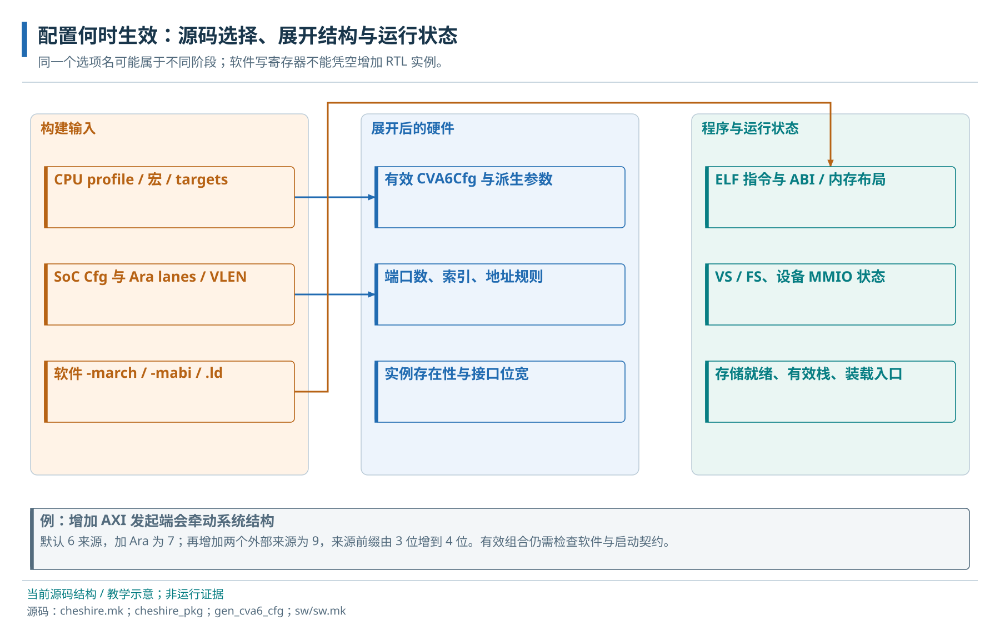
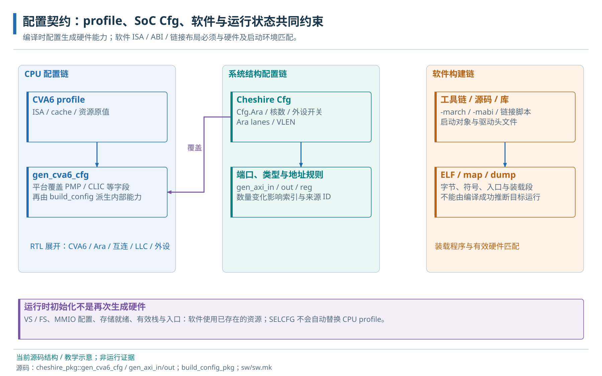

第一篇 · 系统基础与配置
03 · Cheshire、CVA6、Ara 与软件配置
按真实字段及消费者建立自洽组合。
本章目录 · 节与小节
按真实字段及消费者建立自洽组合。 前置：02 · CVA6 功能与 RISC-V 系统基础。
3.1 配置入口与生效阶段
3.1.1 从常量配置到硬件实例
cheshire_cfg_t 是打包的配置结构，DefaultCfg 提供起点。平台函数复制它并修改字段，再以 parameter 传入 SoC。编译器读取包、类型和模块定义；展开器确定参数、计算常量函数、展开 generate 分支和实例数组；综合器随后优化逻辑并映射实现单元。软件写寄存器时，这些实例和位宽已经确定。

CPU 实际配置经历 profile::cva6_cfg → gen_cva6_cfg(Cfg) → build_config → cva6。第一步给出原值，第二步覆盖地址属性、总线、PMP 和 CLIC 等平台字段，第三步派生内部能力，例如由 RVV 得到 EnableAccelerator。SoC 默认把 PMP 条目数覆盖为 0，且设置 CvxifEn=0；本地 Ara 组合采用专用加速器及地址翻译协作接口。
generate if 选择实例，generate for 复制实例；普通 always_comb 中的地址判断则在运行中对每笔请求求值。parameter type 携带请求结构类型，其地址、数据、ID 和字节使能宽度必须与数值参数匹配。$clog2(N) 用于来源编码，单端口时还需留意防零宽的辅助函数。
3.1.2 三个入口与一份系统契约
CPU 配置回答“能执行哪些指令、有哪些缓存和保护资源”；SoC 配置回答“这些核连到哪些设备、以什么位宽和地址访问”；软件配置回答“编译出什么指令、遵守什么调用约定、放在哪块存储”。最后，运行时初始化使已经存在的硬件进入可用状态。它们共同描述一台机器，只靠任意一层都不足以定义可运行系统。

以向量数组加法为例：-march 带 V 只允许编译器输出向量指令；CPU 的 RVV 和真实 decoder 负责识别指令；Cfg.Ara 产生实际执行硬件；VS 打开状态许可；向量地址还必须能到达已就绪的存储。若出错，应沿指令、接受、访存、结果四个观察点定位，分别回到对应配置层。
3.1.3 向量组合的配置推导
当前 TB 的 SelectedCfg=3 从四项数组中选取 gen_cheshire_ara_cfg()：在默认值上设置 Ara=1、AraNrLanes=2、AraVLEN=2048。它在展开阶段生效，CPU profile 早在编译时已经选定。因此真实向量 decoder、向量 profile 和 SoC Ara 实例必须在同一组输入中匹配。
lane 数决定向量寄存器分片和执行并行规模；Ara VLEN 是每个架构向量寄存器的位数。32 个寄存器在 VLEN=2048 时共保存 8 KiB 有效数据。CPU profile 中同名 VLEN=64 表示地址容器宽度。当前 Ara 本地 AXI 数据宽度为 32×AraNrLanes，增加 lane 会影响位宽转换及存储压力。
| 配置位置 | 本地取值与落实方式 |
|---|---|
| RTL 源码清单 | 唯一 cv64a6_imafdcv_sv39 profile；选择真实 first-pass decoder，排除 stub |
| SoC 展开 | TB SelectedCfg=3，单核、Ara 2 lanes / VLEN 2048 |
| FPGA wrapper | 读取 ARA/NR_LANES/VLEN 宏；TB 函数则直接写定 2/2048 |
| 软件 | 选择匹配 ISA、调用约定和存储布局；第一条向量指令前设置 VS，浮点还需 FS |
现有 FPGA 加源脚本已选向量 profile；现有两套旧仿真清单仍是标量 profile 且包含 decoder stub 与真实实现。教材在独立目录导出自洽清单，第 17 章给出入口。常用标量组合是 DefaultCfg、Ara=0 和标量 profile；RT 与 CLIC 分别有 SelectedCfg=1/2，它们只覆盖各自字段。
3.2 按字段、消费者和约束核对配置
3.2.1 SoC 与 Ara 实例参数
| 真实入口 / 来源 | 约束依据与本地取值 | 结构与软件后果 |
|---|---|---|
| Cfg.Ara / cheshire_cfg_t | bit，0/1；gen_cheshire_ara_cfg 置 1 | 实例化 Ara 并增加 AXI 发起端；CPU RVV、宏和 decoder 要配套 |
| Cfg.NumCores | SoC 断言：Ara 开启时不允许大于 1 | 不能把单核向量接口直接复制为多核共享接口 |
| Cfg.AraNrLanes | Ara 顶层要求非零、2 的幂、≤MaxNrLanes=16；当前 2 | VRF/计算分片及本地 AXI 宽度 32×lane 数变化 |
| Cfg.AraVLEN | 非零、2 的幂且≥ELEN；当前 2048，ELEN=64 | 改变每个向量寄存器容量；软件按实际 vl 分块 |
| Cfg.LlcOutConnect / LlcNotBypass | 当前 1/1；1/0 旁路；0/0 关闭；避免 0/1 | SPM 是否存在和 ROM/栈契约一起变化，详见存储章 |
| Cfg.Cva6NrPMPEntries | 当前默认 0，覆盖 profile 原值 | 不能宣称已有 PMP 区域隔离；新增保护需重新配置和验证 |
Ara 顶层断言是必要条件，不是所有参数组合均已通过的证明。lane 内 bank、队列和 SoC 位宽消费者还需展开验证。当前 2/2048 是本地选值；允许范围与已验证组合必须分别记录。
3.2.2 CPU 选源与软件选项
| 入口 | 谁消费、何时生效 | 需要同时检查 |
|---|---|---|
| CPU profile::cva6_cfg.RVV / RVF / RVD / DCacheType | 源文件选入后由 gen_cva6_cfg 覆盖、build_config 派生 | 只选一份 profile；比较最终有效值，不能只看上游原值 |
| TB SelectedCfg=0/1/2/3 | tb_cheshire_pkg 的四项配置，展开时选择 | 依次为默认/AXI RT/CLIC/Ara；不会重新选择 CPU 文件 |
| FPGA ARA / NR_LANES / VLEN | 预处理宏，由 wrapper 赋入 SoC 字段 | 与 TB 的直接赋值属于不同入口，名称不可混用 |
| -march / -mabi / linker script | 编译器与链接器 | 指令能力、调用约定、地址布局；运行时还需 VS/FS 和存储就绪 |
本节依据：参数断言。
本节依据：gen_ara、AraDataWideWidth、单核断言。
3.3 跨模块的结构影响
3.3.1 端口、规则与 ID 的全局依赖
地址规则说明一个地址区间通向哪个目标；端口是实际请求/响应接口。多个窗口可以通向同一端口，例如两个 SPM 别名都通向 LLC 阵列。gen_axi_in 按启用设备分配发起者序号，gen_axi_out 生成 AXI 目标和窗口，gen_reg_out 生成寄存器目标和窗口。它们是展开时计算结构的常量函数。
默认单核且保留各设备时，发起者依次为 CPU、Debug、DMA、Link、VGA、USB，共 6 个。打开 Ara 后把 Ara 放在序号 2，其余后移，总数变为 7。输入 ID 为 2 位时，Crossbar 在目标侧附加来源位，6 或 7 个来源都需要 3 位，故目标侧 ID 为 5 位；再增加两个外部发起者变为 9 个，才需要 6 位。这是路由标识的尺寸推导。
关闭寄存器设备会删除它的实例和地址规则，并压紧后续内部端口索引；其他设备的固定地址通常保持。例如 UART 关闭后 I2C 的内部 Reg 索引从 7 变为 6，地址仍为 0x03003000。软件地址和中断号应各自核对，不能从紧凑端口索引推算。
3.3.2 生成尺寸与平台条件
部分模块来自生成工具，当前 PLIC 为 58 个源、2 个 context，CLINT 为 1 个核，AXI RT 为 6 个 manager、每个 2 个 region。SoC 字段变化需要同步生成尺寸、软件头和实例消费者。Ara 与多核组合在当前顶层还有明确约束，应以实际展开检查为准。
平台再决定时钟、复位、引脚及存储连接。USE_I2C 等板级宏和 Cfg.I2c 处于不同层，缺少引脚宏可能只是不接引脚。外设专属 FIFO、同步级数和时序参数将在各设备章随操作解释；总配置章只保留跨模块依赖。
配置修改应留下四项结果：选入的源码与宏、覆盖后的有效参数、实际展开层级及接口位宽、正常/错误事务验证。源码阅读时可以由三个常量函数手算端口变化；参数全集按需查配置参考。
3.4 配置组合与验证条件
3.4.1 取值范围、结构约束与已验证组合
“合法”首先是类型能表达，例如 bit 只有 0/1；其次是模块断言、接口尺寸和地址规则允许；第三是系统启动及软件契约成立；最终才是某一工具与平台上的验证结果。整数参数的位宽只是表示范围，不能当作所有值都可用的证明。本地 SoC 仍有未实现的配置校验 TODO，因此配置审查不能只看是否触发 assertion。
| 配置决策 | 成立条件 | 未满足时的具体后果 |
|---|---|---|
| NumCores 从 1 增大 | 核实例、CLINT、PLIC context、调试 hart 信息和软件启动一起匹配；本地 Ara 集成要求单核 | 增加 CPU 数不同时增加生成器产物中的中断资源 |
| Ara=1 与 AxiRt=1 | AXI 发起者增加后重算 RT manager 数、生成寄存器和驱动编号 | 默认 6-manager RT 与 7 个内部发起者失配；SELCFG 的独立选项没有验证它们的并集 |
| LlcOutConnect/NotBypass 为 1/1、1/0、0/0 | 分别提供 LLC、仅出口旁路、关闭出口；后两者另行解决启动存储契约 | 原 Boot ROM 与 SPM 链接方式依赖 LLC 阵列，不能保持原启动链后直接去掉阵列 |
| 关闭 UART/SPI/I2C | 同步选择不依赖该设备的启动/诊断路径，或提供平台适配 | 实例消失后，原 ROM 服务或 C 驱动仍可能访问旧地址 |
| 增加外部 AXI/Reg 设备 | 端口计数、规则数、目标索引、类型宽度、访问属性及中断编号分别匹配 | 有地址属性却没有译码规则时，请求仍到不了设备 |
| 修改数据/USER/ID 宽度 | typedef、适配器、AMO/错误编码位域和所有端点一起核对 | 可截断来源或字节使能，错误可能表现为响应错投而非编译错误 |
官方概述写扩展端口“最多 16”，同页参数表列 0..15；本地计数字段为 4 bit。本文按本地可表示值与消费者分析，不据概述宣称可直接配置 16。类似差异统一记入来源对照。
3.4.2 按用途选择配置候选
第一入口是 SoC 的 Cfg，它决定实例、端口和地址；第二入口是源文件选择及 CVA6 profile，它决定译码、缓存和处理器能力；第三入口是软件 ISA/ABI、启动状态与链接布局。它们在不同阶段生效，不会因名字相似而自动联动。表中“候选合法”只说明约束能配对，动态结果仍要单独记录。
| 用途 | SoC / CPU / 软件组合 | 验收与边界 |
|---|---|---|
| 标量 SPM 起步 | 当前标量 profile，Cfg.Ara=0；rv64gc_zifencei/lp64d；spm.ld | FS 与实际指令匹配；核实 ROM 建立 SPM/栈。深度扩充时只构建独立教材 ELF |
| RVV 整数数组 | cv64a6_imafdcv_sv39；Cfg.Ara=1、2 lanes、VLEN=2048；仅内核加 V，lp64d | 定义 ARA、使用真实 first-pass decoder 并排除 stub；VS 必须开启；验证 req/resp 与逐项结果 |
| RVV 浮点 | 上述组合，加 VS/FS；本地 Ara 默认 HalfSingleDouble | ISA 中有 F/D/V 不表示所有浮点组合已验收；深度扩充的 FP32 intrinsic 只做编译探针 |
| 外部 DRAM 程序 | LLC 下游连接、有效平台内存；dram.ld 把应用放在 0x80000000 | 当前链接区 8 MiB 不是 DDR 容量声明；控制器初始化和模型容量另查 |
| AXI RT 预算 | DefaultCfg+AxiRt=1；SELCFG=1；标量 profile | 6 manager/2 region；DMA 编号、计账与搬运结果一起验收 |
| CLIC 门限/向量 | DefaultCfg+Clic=1；SELCFG=2；有效 RVSCLIC=1 | CLIC 源数、CSR/向量表及触发顺序匹配 |
| IRQ Router 分发 | DefaultCfg+IrqRouter=1 的待建独立配置；RVSCLIC=0 | 无现成 SELCFG；目标掩码、PLIC handler 与受控事件测试 |
| ASIC 固定基线 | 建议冻结上述向量组合和静态清单，换平台 wrapper | 尚未提取；PLL/PAD/SRAM/DDR/DFT 都有外部约束，不能只改 target 宏 |
VLEN 是寄存器容量，lane 数是物理并行度，两者还受 Ara 参数断言、每 lane 存储大小及支持的组合限制。本地 SoC 的 Ara 集成按单核使用；多核加多个 Ara 需要重新设计连接与软件所有权。编译 C 时 -march 声明编译器可生成什么，-mabi 决定调用约定；lp64d 并不会自动让任意调用经过向量寄存器传参，本例以普通标量 ABI 传指针和长度。
每次构建保留 profile 源路径、宏、展开 Cfg、编译器版本、完整命令、ELF attributes 和 dump。软件 ELF 中含 V、硬件接受 V、最终数据正确是三个不同检查。具体接口与编程见向量专题，本章只建立匹配关系。
3.4.3 三个独立案例的共同基线
以下是完整的静态配置记录示范，分别在 DefaultCfg 上只开启一个功能，不叠加 Ara。共同输入为单核、cv64a6_imafdchsclic_sv39_wb profile、Ara=0、Bootrom=1、PlatformRom=0、LLC 两个开关均为 1；软件沿原 rv64gc_zifencei / lp64d、spm.ld 与 crt0.S。工具入口是 sw/sw.mk 的 riscv64-unknown-elf 工具链，实际版本须随目标运行日志记录。本轮未编译或运行这三个案例。
仿真装载可沿第 17 章的 JTAG 路径，先核对实际 profile/decoder 清单及 SPM/继承栈前提，再装载相应程序。硬件选择、软件输入和预期观察点如下；这些是待验证案例，不能以已有 ELF 或源码存在宣称通过。Router 案例还需要新增独立配置入口与测试程序，当前四项 SELCFG 没有它。
3.4.4 AXI RT：DMA 搬运的预算核对
配置与结构：SELCFG=1 → gen_cheshire_rt_cfg() 只将 AxiRt 置 1；Clic=0、IrqRouter=0，CPU 有效 RVSCLIC=0。主互连前实例化流量调节器，配置窗口为 0x020c0000。默认 6 个发起者中 CPU=0、Debug=1、DMA=2；cheshire.mk 的 AXIRT_NUM_MGRS=6、AXIRT_NUM_SUBS=2 与当前生成寄存器/软件头必须一致。
软件与启动：参考 axirt_budget.spm.c，按共同基线使用 SPM 栈并完成 crt0 初始化。程序检查 AXIRT/DMA feature，调用 __axirt_claim，设置分段限制、两个 region、读写预算和周期，再使能 CPU/DMA 对应位。它按 num_int_harts+1 计算 DMA 编号，只适用于此处没有 Ara 的来源排列。缓冲区通过非缓存 SPM 别名访问，还需保证栈容量及缓冲区独占。
最小验收：程序搬运 128 个 uint64_t，共 1024 字节，逐项比较目标数据；DMA 读、写预算的减少量都应为 1024，并且剩余预算相等，最终返回 0。运行环境必须设置有界超时，保留 feature/manager 编号、预算前后值、首个数据不匹配位置和退出码。该例验证预算计账，不单独证明预算耗尽后的节流或实时延迟上界。
当前阻塞：原 iDMA 控制寄存器位宽/lane 与 ID 读取问题仍待独立修复和验证，见DMA 章。Ara+RT 还会把内部 manager 数改为 7、DMA 编号改为 3，必须重生成 RT 规模并修正软件编号；不能把 SELCFG=1 与 SELCFG=3 的独立案例简单合并。
3.4.5 CLIC：中断门限与向量入口
配置与结构：SELCFG=2 → gen_cheshire_clic_cfg() 只将 Clic 置 1；AxiRt=0、IrqRouter=0。gen_cva6_cfg 将 RVSCLIC 覆盖为 1，CPU 与每核 CLIC 实例共同接收 IRQ ID/level/SHV 等接口。核 0 窗口为 0x08000000，INTCTLBITS=8；N_SOURCE=NumCoreIrqs+NumIntIntrs+Cfg.NumExtClicIntrs，本地默认为 16+58+0=74，与 CPU 的 CLICNumInterruptSrc 一起核对。
尺寸与软件：CLIC 本身按实例参数展开；改变中断规模时，还需核对固定生成的 PLIC 58 源/2 context、CLINT 1 核、源编号和软件向量表，不能把所有控制器都视为自动同改。clic_basic.spm.S 使用原启动代码进入汇编 main，设置 mtvec 模式 3、mtvt（0x307）、mintthresh（0x347），配置源 31 的 SHV、触发、pending、enable 和控制字段。它直接写 CLIC pending，不依赖 Router 或外部设备激励。
最小验收：按原例先设门限 0xff，使源 31 已 pending/enable 但不进入成功处理路径；经过有限等待后将门限降为 0，应进入向量表的 thirtyone 路径并返回 0。提前触发、走错误入口或等待结束仍未触发均返回失败；同时观察 PC、门限和 IRQ ID，设置整场景超时。此例的处理路径直接回到测试返回流程，不能据此证明一般 ISR 的上下文保存、mret 或嵌套中断已正确。
当前边界：本地 CLIC 依赖所附开发版本规范及 CPU 实现，CSR/向量语义按当前源码解释；本轮没有该候选的重新展开与运行记录。默认 PLIC handler 不可原样替代这个入口；中断章保留两种路径的区别。SELCFG=2 不会开启 Router。
3.4.6 IRQ Router：UART 中断的目标屏蔽
配置与结构：候选配置从 DefaultCfg 复制后仅置 IrqRouter=1，保持 Clic=0、AxiRt=0；CPU 有效 RVSCLIC=0。该函数和选择项尚需在独立验证配置中实现，不能使用不存在的 SELCFG 编号。Router 窗口为 0x02080000，每个输入源的 32 位目标掩码位于 base+4×source。目标 0 是 PLIC，目标 1 是核 0 的 CLIC 输入分支；本例 CLIC 关闭，因此只用目标位 0。
尺寸与编号：NumIntrSrc=$bits(cheshire_intr_t)、NumIntrTargets=1+NumCores+NumExtOutIntrTgts 由 SoC 传入 Router，本例目标数为 2。寄存器为每源复制一个生成单元，源码限制目标数不超过 32；源数还要考虑零有效外部输入的占位位宽。实际 UART 源号由 packed struct 确认为 1，所以其掩码地址为 0x02080004。源布局或 PLIC 规模改变时，软件编号必须同步核对。
软件与启动：使用共同 SPM 启动基线，建立普通机器态 trap/PLIC handler，配置 UART 接收事件、PLIC 源 1 的优先级/使能/门限及 CPU 中断使能，再设置 Router 掩码。当前单源掩码复位为 1，即送往 PLIC；验证应显式写入，不依赖复位值。handler 需读取 UART 数据消除事件原因，再 PLIC complete；Router 不代替领取/完成协议。
最小验收与缺口：这是待编写的系统测试：先写掩码 0，由 TB 提供一个受控 UART 接收事件；确认输入事件有效、intr_routed[0] 对应位为 0，观察窗口内 handler 计数不增加。清除 UART 原因及遗留 PLIC pending/in-service 状态后，写掩码 1，再提供一次新事件，应进入 handler、领取源 1、消费数据并完成。无事件、错源、重复服务或超时均失败；保存掩码读回、输入/路由输出、claim ID 和计数。当前没有专用 Router 的 TB 选择项或上述完整测试程序，不能将参数可展开当成实测通过。
源码静态确认：四项配置函数、gen_cva6_cfg / cheshire_int_intr_t、gen_axi_rt / gen_clic / gen_irq_router / IntrRtdPlic、AXIRT_NUM_MGRS / AXIRT_NUM_SUBS、生成软件头；Router 的源/目标参数与译码及掩码复位值。CLIC 版本边界见随附官方说明。
3.5 软件选项与运行时配置的联动
编译和运行时设置也各有职责：-march 决定允许生成的指令，-mabi 决定函数之间如何传值，链接脚本安排地址；crt0 建立栈和 C 初始状态，驱动写设备寄存器，CSR 设置处理器运行状态。编译参数不向硬件写入任何寄存器，寄存器操作也不能补出综合时未实例化的单元。
本地原软件默认 rv64gc_zifencei/lp64d；教材将向量内核单独以带 V 的选项编译，保持公共初始化代码可在开启 VS 前执行。仅仅把 C 中的浮点表达式删掉，仍会留下 crt0 的双精度浮点初始化指令。若要构造无 F/D 的精简系统，必须把启动代码、库和 ABI 一同纳入另一项实现任务。
建议为每组候选保留一行配置记录：CPU profile 与宏、最终 Cfg、生成文件版本、编译器与 ISA/ABI、链接模式、装载路径、初始化责任及实际验证环境。配置流程提供详细入口；软件选项表解释 Make 变量的实际消费者。本章的组合为源码静态审查，动态通过状态沿用各实验的独立记录。
增加两个外部 master 后，哪些信息需要重算？
发起者表和 ID 位宽、AXI RT manager 数及编号、原子来源编码都要核对；新增访问还需要地址属性和存储契约。
SELCFG=3、软件带 V 后仍出现非法指令，应先核对哪些不同层次？
先用构建输入与反汇编确认实际指令；核对唯一向量 profile、真实 first-pass decoder 和 ARA 宏；确认展开的 Ara 实例与运行时 VS/FS。若指令已经接受，再检查地址和完成路径。